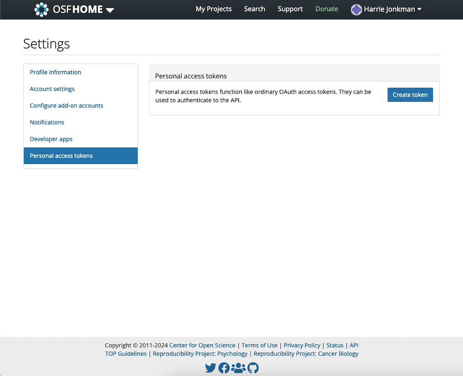
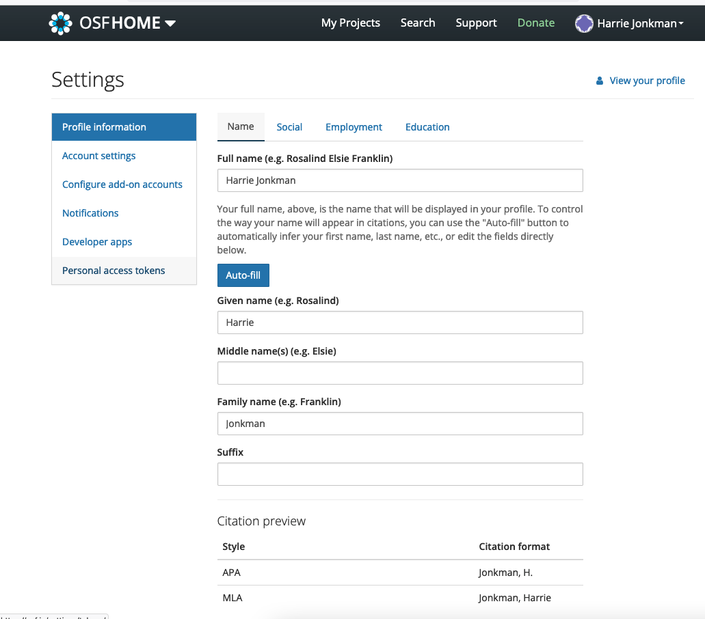

16 Rapporteren & Reproduceerbaarheid
In dit hoofdstuk worden enkele gereedschappen gepresenteerd om met een reproduceerbare workflow te werken. Dit betekent dat de code en de resultaten van de analyse op een zodanige manier worden opgeslagen dat ze opnieuw kunnen worden uitgevoerd. Voor het uitvoeren van meta-analyses in R is dat handig voor jouzelf en voor degenen die met jou werken.
Streven naar reproduceerbaarheid is ook een hoeksteen van open science. Volledig reproduceerbare meta-analyses maken het zo voor anderen zo transparant mogelijk hoe we aan onze resultaten zijn gekomen.
R Studio is een optimaal hulpmiddel om een reproduceerbare workflow te creëren en samenwerking te vergemakkelijken. In dit hoofdstuk worden drie gereedschappen gepresenteerd om onze analyses te reproduceren, rapporteren en verspreiden: R Projects, R Markdown en het Open Science Framework. In dit notitieboek wordt enkel ingegaan op OSF omdat ik over de andere twee onderwerpen al veel meer heb geschreven.
16.1 Open Science Framework
Het Open Science Framework (OSF) is (net als GitHub) een open-source online platform om samenwerking en reproduceerbaarheid in onderzoek te vergemakkelijken. Het OSF omvat een online repository, waar onderzoekers hun onderzoeksmateriaal deponeren om samen te werken en alle stappen van het onderzoeksproces (meer) transparant te maken. De OSF is een speerpunt van de open science beweging, die de laatste tien jaar veel momentum heeft verzameld.
Het wordt aangemoedigd dat alle meta-analisten hun onderzoeks- en analyseproces transparant maken voor het publiek, door open toegang te geven tot de verzamelde gegevens en de R-code die ze voor hun analyses hebben gebruikt. De OSF is een geweldig hulpmiddel om dit te doen - alle repositories die je voor jezelf hebt gemaakt zijn standaard privé en het is aan jou om te beslissen of, wanneer en wat je openbaar wilt maken. In het volgende laten we zien hoe een OSF repository wordt opzet in R, bestanden worden geupload en download en hoe medewerkers worden toevoegd.
To start using the OSF, we first have to create a personal account on the website. After the account has been created, we also have to generate an access token so that we can manipulate our repository directly using R. To get the access token, we have to navigate to Profile > Settings > Personal access tokens. There, we click on Create token.

Then, under Scopes, we check all boxes, and click on Create token again. After that, our personal access token should appear. We copy the token and save it for later.

16.2 Het {osfr} pakket en authenticatie
To access our OSF repository directly via R, we can use the {osfr} package (Wolen et al. 2020). Before we can use the functionality of this package, we first have to use our access token to authenticate. To do this, we use the osf_auth function, providing it with the access token we just received (the token displayed below is made up):
library(osfr)
osf_auth("AtmuMZ3pSuS7tceSMz2NNSAmVDNTzpm2Ud87")Using {osfr}, we can now initialize an OSF repository using R. Imagine that we are working on a new meta-analysis project, and that we want to upload our data as well as an R Markdown script to an OSF repository. The name of the repository should be “Meta-Analysis Project”.
To create a new repository, the osf_create_project function can be used. We save the new OSF repository in R as meta_analysis_project.
meta_analysis_project <- osf_create_project("Meta-Analysis Project")Using the osf_open function, we can then access the newly created repository online:
osf_open(meta_analysis_project)Now that the repository has been created, we can proceed by adding components to it. In OSF, components work like folders on a computer. Suppose we want to create two components: one for our data sets, and one for our R Markdown scripts. To do this, we can use the osf_create_component function. We have to provide the function with the R repository object (meta_analysis_project), and then set the title of the new component.
scripts <- osf_create_component(meta_analysis_project,
title = "Analysis Scripts")
datasets <- osf_create_component(meta_analysis_project,
title = "Datasets")When we go to the online page of the repository now, we see that the two components have been added.
To upload data to the OSF repository, we can use the osf_upload function. The function requires us to specify the component to which we want to add the file, and the path to the file that should be uploaded. Suppose that we want to upload an R Markdown script called “Analysis.rmd”, which is currently saved in our R project sub-folder “scripts”. To upload, we can use the following code:
osf_upload(scripts, "scripts/Analysis.rmd")To see if the file has been uploaded successfully, we can access contents of the component using the osf_ls_files
osf_ls_files(scripts)We see in the output that the upload was successful. To download a file, we can select a row from the osf_ls_files function output, and use it in the osf_download function to download the file back into the project folder on our computer.
osf_download(osf_ls_files(scripts)[1,])On the OSF repository website, we can also add collaborators under the Contributors field.
At any time, it is possible to make the repository public by clicking on the Make Public button in the upper right corner of the website.
In Chapter 1.4.2, we discussed that analysis plans and pre-registration are essential parts of a high-quality meta-analysis. The OSF makes it very convenient to also create an openly accessible pre-registration for our project. We simply have to click on the Registrations button on top, and then create a New registration. This leads us to the OSF Registries website, where we can provide detailed information on our planned study, including our analysis plan.